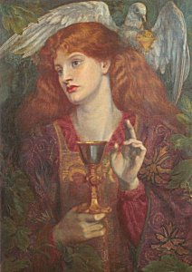

Sacred Texts Legends/Sagas Arthur
|  |
From Ritual to Romanceby Jessie L. Weston[1920] |
At the advanced age of 70, Jessie Weston, who had spent decades immersed in the Arthurian canon, wrote this relatively short book to attempt to explain the roots of the legend of the Holy Grail. She enumerates the seemingly inexplicable elements of the quest--The Fisher King, The Wasteland, the Chapel Perilous, and the Grail Cup itself--and ties them to the symbols and initiatory rites of the ancient mystery religions. She also attempts to identify the author and locality of the tale. Her thesis still inspires heated controversy among academics. It is also claimed that T.S. Elliot's The Wasteland was based on this book, although this has been questioned.
One thing is certain; although this book is one of the bullet-points of 20th century culture, probably very few have read and understood it in its entirety. Written in a formal academic style, with extensive passages in a dozen different languages, From Ritual to Romance is frankly a tough, but ultimately very rewarding read.
Production Notes: Although this book has been available previously in etext from several sources, particuarly Project Gutenberg, this is the first version on the web which preserves the pagination and italicization of the first edition. This is vital for citation purposes. Greek and a few other characters have been transcribed in Unicode, and a number of transcription errors found in other etexts have been corrected.
--J. B. Hare
Title Page
Preface
Contents
Quotes
Chapter I. Introductory
Chapter II. The Task of the Hero
Chapter III. The Freeing of the Waters
Chapter IV. Tammuz and Adonis
Chapter V. Medieval and Modern Forms of Nature Ritual
Chapter VI. The Symbols
Chapter VII. The Sword Dance
Chapter VIII. The Medicine Man
Chapter IX. The Fisher King
Chapter X. The Secret of the Grail (1): The Mysteries
Chapter XI. The Secret of the Grail (2): The Naassene Document
Chapter XII. Mithra and Attis
Chapter XIII. The Perilous Chapel
Chapter XIV. The Author